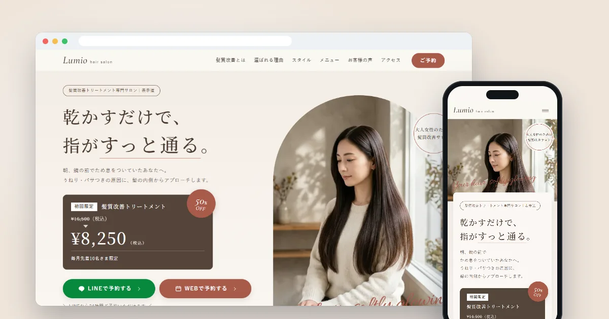
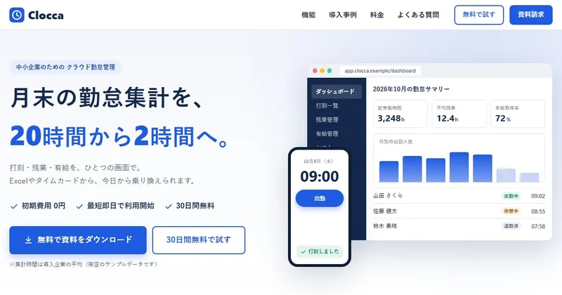
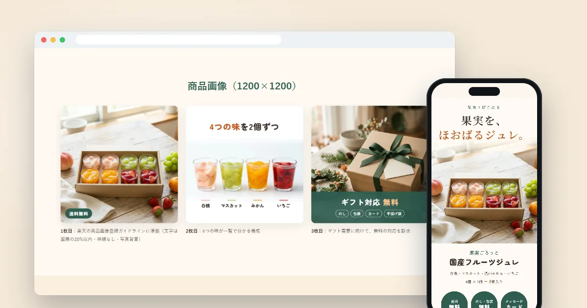
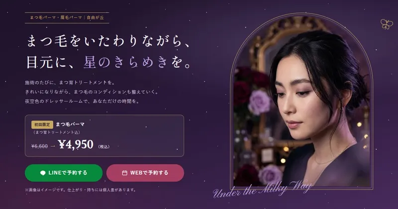
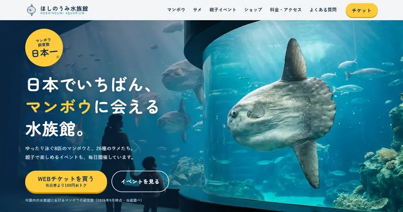

Works
制作物
ポートフォリオとして制作した、架空のサービスのサイトです。
構成・コピー・デザイン・コーディングまで、すべて一人で制作しました。
-

LP｜個人向け
美容サロン「Lumio」
髪質改善トリートメントのLP。上品な世界観と、予約につながる導線を設計しました。
- 薬機法・景品表示法に配慮した表記
- 写真は画像生成AIで作成
サイトを見る
-

LP｜企業向け（BtoB）
クラウド勤怠管理「Clocca」
中小企業向けSaaSのLP。数字・比較表・導入事例で説得する構成にしました。
- 管理画面のイメージを写真なしでコーディング
- 資料請求フォームを実装
サイトを見る
-

楽天市場の商品ページ
果実工房こはる
食品ギフトの商品ページ。スマホ用の縦長LP画像10枚と商品画像3枚、楽天用HTMLまで制作しました。
- 楽天の仕様と商品画像ガイドラインに対応
- 食品表示を省略せずに掲載
サイトを見る
-

LP｜要望から制作
アイサロン「Milky Way」
まつ毛パーマ・眉毛パーマのサロンのLP。「まつ育しながら綺麗に」「ロマンチックな店内」という要望から、世界観を組み立てました。
- ブランド名を使わず、色とモチーフで雰囲気を表現
- 成長を約束しない「まつ育」の書き方
サイトを見る
-

LP｜要望から制作
ほしのうみ水族館
マンボウの飼育数を売りにする水族館のLP。施設名の考案から、マンボウ・サメ・親子イベントの見せ方まで設計しました。
- 「日本一」に根拠の注記をつける（景品表示法）
- マンボウとサメのイラストをSVGで制作
サイトを見る
Skills
できること
LP制作
構成・コピー・デザイン・コーディングまで。スマホ・タブレット・PCに対応します。
ECの商品ページ
楽天市場・Yahoo!ショッピング向けの、縦長LP画像・商品画像・HTML。
表示速度の改善
画像の最適化やフォントの軽量化で、読み込みの速いページに。
AI画像の活用
イメージ画像を画像生成AIで作成。実在の商品や実績のように見せる使い方はしません。
Policy
AIとの付き合い方
制作には、Claude Codeなどの生成AIを使っています。AIを使うと、形にするまでの時間はぐっと短くなります。
でも、「誰に、何を伝えるか」「その表現は正しいか」「品質は十分か」を決めるのは自分。AIは速く作るための道具として使い、最終的な確認は必ず自分の目で行っています。
- 着手前に、ターゲットとゴールをはっきりさせる
- スマホ・タブレット・PCの3つの画面幅で確認する
- 法律やプラットフォームのルールに沿った表記にする
- 表示速度やアクセシビリティを計測して改善する
About
しまぽんについて
しまぽん Shimapon Works
生成AIを使ったWeb制作と個人開発を、学びながら実践しています。「学んで終わり」にせず、作って、公開して、実績にして、仕事につなげるのが目標です。
まだ学びの途中ですが、そのぶん一つひとつの制作をていねいに。学んだことや作る過程は、Xで発信しています。
Contact
お仕事のご相談
LP・商品ページの制作は、クラウドワークスでお受けしています。
制作の過程や学んだことは、Xで発信しています。